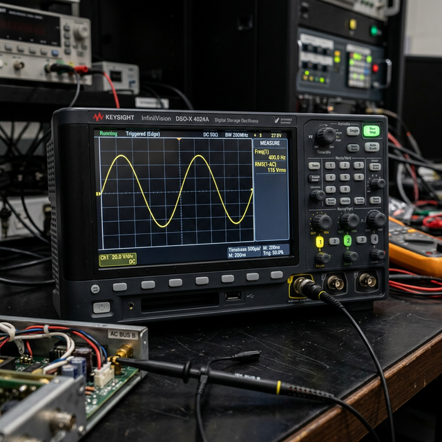

AC fundamentals
frequency/waveform/reactance/transformer
Module Objectives
- Define AC frequency and explain why aviation utilizes the 400 Hz standard instead of 60 Hz.
- Identify the components of a sinusoidal AC waveform.
- Explain the basic operation and advantage of an electrical transformer.
Why Does This Matter?

A technician is repairing a heavy transport AC generator control unit on the bench. They verify the output is a perfect 115 VAC, sign off the unit, and install it. But when the aircraft powers up, the AC-powered gyro motors run erratically and the avionics displays glitch constantly. The problem? The generator is outputting 115 VAC, but at 350 Hz instead of the required 400 Hz. In AC systems, voltage alone does not define power — frequency matters equally. If you do not understand AC characteristics, you cannot maintain large transport or business aircraft.
What You Need To Know
While light aircraft run entirely on 28V DC, large business jets and commercial airliners generate and distribute primary power as Alternating Current (AC) (typically 115 VAC, 3-phase).
The Waveform and Frequency
Unlike DC which stays flat, a single-phase AC voltage follows a sinusoidal (sine wave) pattern:
- It rises from zero to a positive peak, drops back through zero, falls to a negative peak, and returns to zero — completing one full cycle.
Frequency describes how many of these complete AC cycles occur per second. It is measured in Hertz (Hz).
- US household power = 60 Hz (60 cycles every second).
- Commercial Aircraft AC systems = 400 Hz.
Why 400 Hz? The Weight Advantage
Why did aviation engineers choose 400 Hz instead of standard 60 Hz? Weight. In electromagnetic devices like motors, generators, and transformers, higher frequencies allow the magnetic cores and copper windings to be physically smaller while transferring the same amount of power. A 400 Hz transformer is a fraction of the size and weight of a 60 Hz transformer. In aviation, shedding pounds is paramount. *The downside?* 400 Hz power experiences much higher line losses over long wire runs, but an aircraft fuselage is short enough that this trade-off is worth it.
The Transformer Advantage
The primary reason heavy aircraft use AC instead of DC is the Transformer:
- Transformers use electromagnetic induction to step AC voltage UP or DOWN. (They physically cannot work with DC).
- Why step up voltage? Because P = V × I. If you step up the distribution voltage (say, to 115V or 230V), you drastically reduce the current required to deliver a specific wattage to the load.
- Lower current means you can use thinner, lighter wiring to route power across the 150-foot wingspan of an airliner, saving hundreds of pounds of copper weight.
Reactance (When Frequency Matters)
In AC circuits, inductors and capacitors behave uniquely compared to DC:
- Inductive Reactance (XL) is the opposition an inductor presents to AC current. Crucially, as the AC frequency *increases*, the inductor's opposition *increases*.
- Capacitive Reactance (XC) is the opposition a capacitor presents. As AC frequency *increases*, the capacitor's opposition *decreases*.
This frequency-dependent behavior is exactly how avionics engineers build the filters that separate high-frequency radio signals from low-frequency audio signals.
System Visualization
graph TD
A[Engine Driven AC Generator] --> B[Produces 115 VAC at 400 Hz]
B --> C[AC Distribution Bus]
C --> D[Transformer Rectifier Unit TRU]
D -->|Steps Down & Rectifies| E[Provides 28 VDC for secondary avionics]
C --> F[Step-Down Transformer]
F -->|Lowers to 26 VAC| G[Powers Synchro/Gyro Instruments]
C --> H[Powers Heavy AC Loads directly]
H --> I[Hydraulic Pumps / Galley Ovens]
style B fill:#1e40af,stroke:#1e3a8a,stroke-width:2px,color:#fff
style D fill:#166534,stroke:#14532d,stroke-width:2px,color:#fff
Interactive Lab
On The Job
When bench-testing or troubleshooting an AC generator, inverter, or ground power cart, verifying voltage with a standard multimeter is only half the job. You MUST verify the frequency using a frequency counter or oscilloscope. 115V at 300Hz is unairworthy power and will destroy expensive 400Hz avionics cooling fans and gyro motors.
Reference Terms
Frequency unit: hertz (Hz)
Frequency is measured in hertz (Hz). One hertz equals one complete AC cycle per second. Aircraft AC systems typically operate at 400 Hz; household power in the US is 60 Hz.
Capacitance unit: farad (F) and microfarad (µF)
Capacitance is measured in farads (F). Because one farad is extremely large, practical avionics capacitors are rated in microfarads (µF, 10⁻⁶ F) or picofarads (pF, 10⁻¹² F). Microfarads are most common in avionics power filtering circuits.
Inductive reactance (XL)
Inductive reactance (XL) is the opposition an inductor presents to AC current flow. It is measured in ohms and increases proportionally with frequency: XL = 2πfL. Higher frequency → higher reactance → less AC current through the inductor.
AC advantage: voltage transformation
The primary advantage of AC in aircraft is the ability to use transformers to step voltage up or down. Higher voltage means lower current for the same power (P = V x I), which allows smaller, lighter wiring — critical in weight-sensitive aircraft.
AC waveform shape
A single-phase AC waveform is a sinusoidal (sine wave) curve that rises above zero to a positive peak, returns through zero, falls to a negative peak, and returns to zero — completing one full cycle at the system frequency.
Transformer operation
A transformer transfers electrical power from one AC circuit to another through electromagnetic induction, simultaneously stepping voltage up or down based on the turns ratio of the primary and secondary windings. Transformers only work with AC.
Verifying AC alternator frequency
A frequency counter or calibrated oscilloscope are the correct instruments to verify that an AC alternator is producing the correct output frequency (typically 400 Hz) during bench testing.
Hertz (Hz)
The standard unit of frequency; equating to one complete AC cycle per second.
400 Hz
The mandated aviation AC frequency standard, chosen to minimize the physical size and weight of magnetic components.
Transformer
An AC-only device featuring primary and secondary windings that transfers power magnetically to step voltage levels up or down.
Sinusoidal Waveform
The smooth, continuously alternating wave shape produced by rotating AC generators.
Assessment Check
AC power relies on both voltage and frequency — aviation uses the 400 Hz standard because it allows transformers and motors to be significantly lighter than 60 Hz components.